This is an In-Depth look into all the functionalities of Motorsport Ultimate.
Artiick Note: OBVIOUSLY In-Game you won't see all the "444" you'll see here. That's
just the default number I used for texts to align stuff properly.
Timing Sheet:

Starting the race you will only see displayed your current laptime

After you completed your 1st lap, the Predicted laptime will also show up

When you cross Start/Finish, you'll see for 3 seconds your last laptime and
the split to best

Note: If you are in a Timed Race Event, it'll
take 1 completed lap for the Overlay to swap to the "Timed Race mode". Additionally, Predicted Lap
Time will no longer show. The rest is unchanged
Note 2: When
racing in Timed Race Events, your Last Lap Time and Split will no longer be accurate to the
millisecond as the code will be self sufficient.
System latency, packet timing and other factors will contribute to its accuracy. Rule of thumb is that it can be inaccurate by 1-2 frames at 60fps (16.667ms*frame)
System latency, packet timing and other factors will contribute to its accuracy. Rule of thumb is that it can be inaccurate by 1-2 frames at 60fps (16.667ms*frame)
Delta Bar:
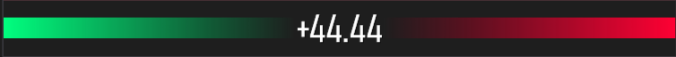
After you completed your 1st lap, the Delta Bar will also show up. Text
color will change accordingly
Note: If you are in a Timed Race Event, the Delta
Bar will NOT appear
Race Information:
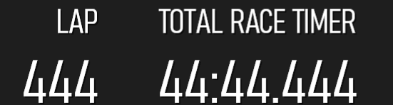
The element will immediately show up at Race Start
When you cross Start/Finish, you'll see for 3 seconds your distance Driven

Lap History:
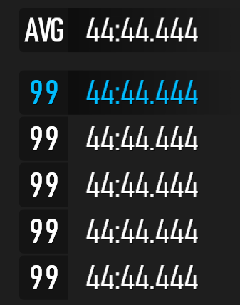
At Race Start and you'll only see displayed your current laptime
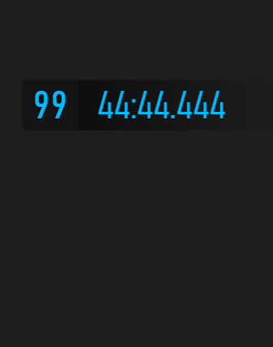
After you complete your laps you'll start to see them as they start
appearing. Additionally there will be displayed your Overall Average laptime.
When you cross Start/Finish, for 3 seconds the AVG will change to green and
display the "Possible best average" (excludes pitstops, lap 1 etc)
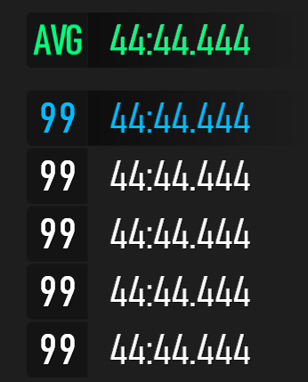
When you cross Start/Finish, if you set a new PB the Element background,
and text color will change accordingly
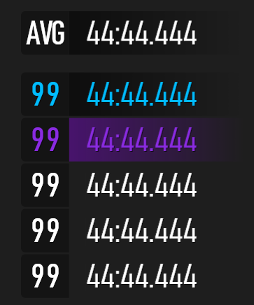
When you cross Start/Finish, if your previous lap was within a set
threshold of your PB, it will turn green for 3 seconds, indicating it was a Good Lap
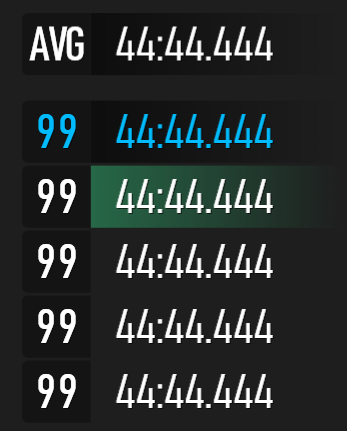
When you cross Start/Finish, if your previous lap was slower then a set
threshold of your PB, it will turn red for 3 seconds, indicating it was a Bad Lap
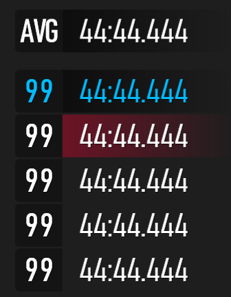
Threshold Set: It has been arbitrarily set at
+100.125% of the Best Laptime. It's a tight margin but since it's static it'll expand the longer a
laptime is.
This is by design as it's supposed to be a simple indicator of "Oh ok, lap was good/bad".
This is by design as it's supposed to be a simple indicator of "Oh ok, lap was good/bad".
Note 2: Lap-History-v1.2 will only change the background color
Vehicle telemetry:
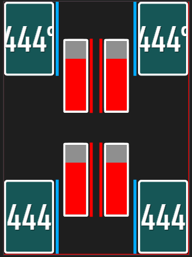
The outer border or the tires will indicate your tire slip. Color will
gradually change from white to
Red = The tire is sliding.
Red = The tire is sliding.
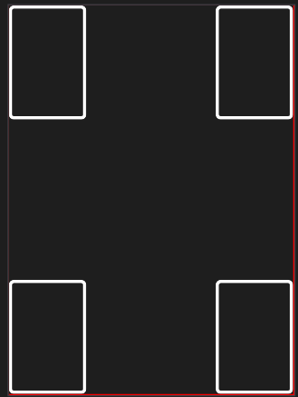
The tire itself + the text will indicate your Tire Temperature. Both Text
and Tire will change color in unison following a color table*.
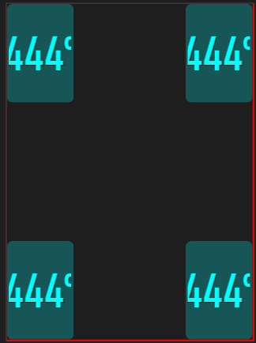
These bars will indicate the suspension compression. Color & height will
gradually increase from white to
Red = The spring is fully compressed/bottomed out.
Red = The spring is fully compressed/bottomed out.
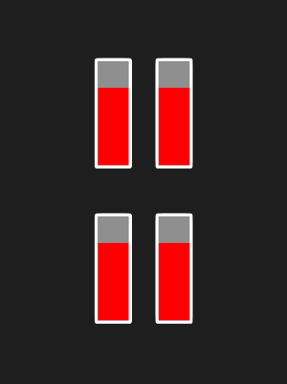
These red bars will turn on and flash white/red if your wheel is making
contact with kerb & kerb-type surfaces.
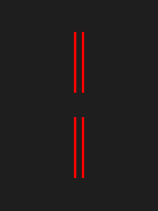
These blue bars will turn on and flash white/blue if your wheel is making
contact with puddles when its raining.
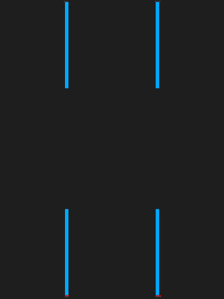
Color Table for Tire Temps
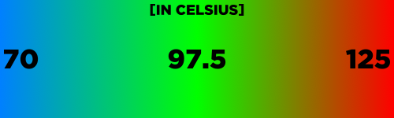
Fuel Information:
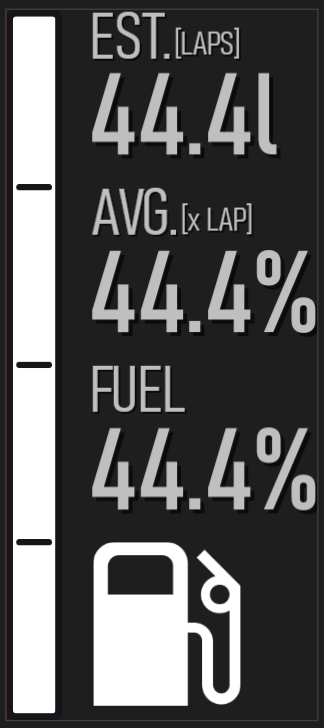
At Race Start and you'll only see displayed your current fuel % (the fuel
bar will follow it accordingly)
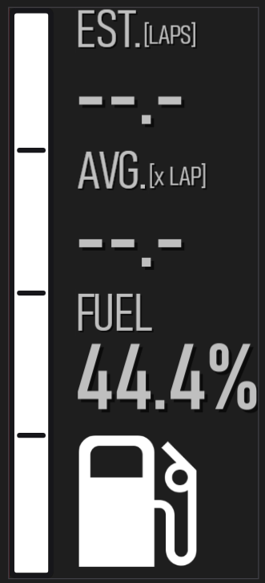
After you completed your 1st lap, Remaining Laps Estimate and Average Fuel
Consumption will appear
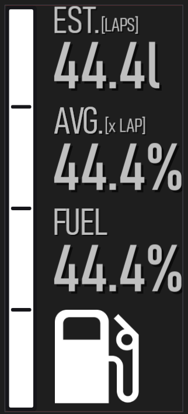
The fuel bar will turn Yellow once you have 20% fuel left. And then
smoothly change to red
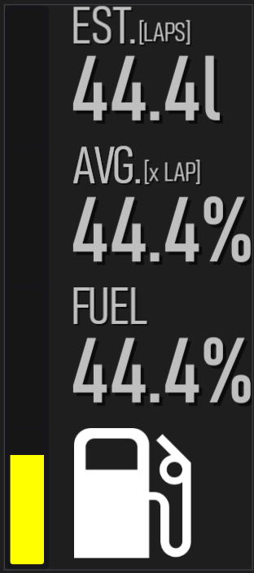
It'll then be fully Red once you have <= 5% fuel left
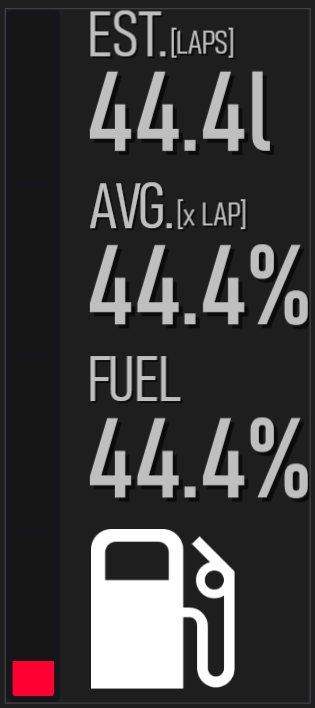
Color change Fuel Bar
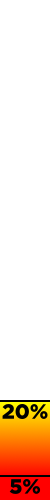
Note: Remaining Laps Estimate will take 2-3
laps
to return pin-point accurate values
Tire Wear:

At Race Start and you'll only see displayed your tire wear. The tire
itself
+ text will change color* based on the wear for easier identification.
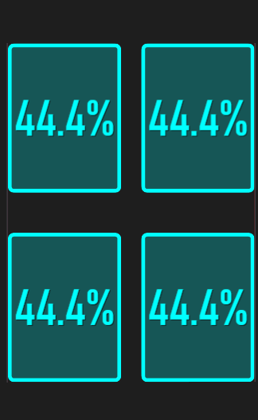
Color Table for Tire Wear
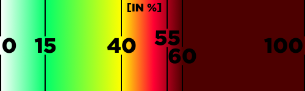
Every time you cross Start/Finish, for 3 seconds, you'll see displayed your last lap Tire Consumption instead of the total Current Tire Wear
After 2 completed laps your Average Tire Wear x Lap will also appear.
These
will indicate how much tire (in%) you are currently using per lap
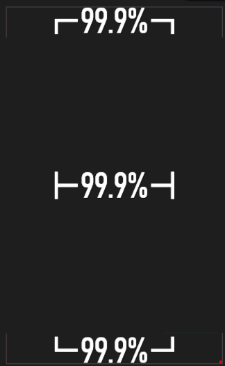

Tachometer (Manual):

Base Elements:

- Shift Lights
- RPM Gauge
- RPM Markers (every 1000 RPM)
- (Fully colored Red) Over Rev Limit Range
(Faded to Red) Approaching Rev Limit - Steer Input (Right/Left) and Steer Center Icon
- Brake Input
- Throttle Input
- Simple x1000 Graphical marker
- (Number) Your current car PI
(Colored letter) Your current car class
Details:
1a. Will light up at 87.5% of the
Shiftpoint you set
1b. Will light up at 90% of the Shiftpoint you set
1c. Will light up at 92.5% of the Shiftpoint you set
1d. Will light up at 95% of the Shiftpoint you set
1e. Will light up at 97.5% of the Shiftpoint you set
All. They will all turn Red and start flashing/blinking every 100ms when you are or over your Shiftpoint
1b. Will light up at 90% of the Shiftpoint you set
1c. Will light up at 92.5% of the Shiftpoint you set
1d. Will light up at 95% of the Shiftpoint you set
1e. Will light up at 97.5% of the Shiftpoint you set
All. They will all turn Red and start flashing/blinking every 100ms when you are or over your Shiftpoint
2. Your RPM Gauge will turn Red when you reach or are over your set Shiftpoint.
It will then start flashing White/Red when you're well above it and you're reaching close to your Rev Limit
It will then start flashing White/Red when you're well above it and you're reaching close to your Rev Limit
4. Both the Red colored range and the fade will automatically set correctly based on the Rev Limit you set.
9. The Class Letter will be correctly colored following the game color scheme:
E,
D,
C,
B,
A,
S,
R,
P,
X.
Main Dial:

- Gearing
- Current Speed (KMH)
- Lateral G's Meter
- Upshift Arrow Indicator
Details:
1a. Current Gear indicator. Will turn the same way the RPM Gauge does.
1b. Previous Gear indicator
1c. Next Gear indicator
Note: When driving new cars for the first time ever, 1c will work properly only after your cycled through the entire gears (thank forza UDP for that since it doesn't actually tell how many gears the car has )
1b. Previous Gear indicator
1c. Next Gear indicator
Note: When driving new cars for the first time ever, 1c will work properly only after your cycled through the entire gears (thank forza UDP for that since it doesn't actually tell how many gears the car has )
2a. Current Speed (MPH)
4. The Upshift arrow will only show up after you reach or are over your set Shiftpoint. It's a simple graphical
indicator
Info Mini-Dial:

- Current Engine RPM
- Current Torque produced by Engine
- Current Power produced by Engine
- Boost pressure, Positive and Negative boost gauge bars
- Input Traces
Details:
4. The element won't show up in NA cars
The Boost gauge bars will follow your current engine boost. In both + pressure (Boost) and - pressure (Vacuum)
The Boost gauge bars will follow your current engine boost. In both + pressure (Boost) and - pressure (Vacuum)
5. Your input traces (Throttle, Brake, Steer, Clutch,
E-Brake) will stay containted and show up within the faint Cyan colored box
Tachometer (Automated):
Base Elements:
- Shift Lights
- RPM Gauge
- RPM Markers (every 1000 RPM)
- (Fully colored Red) Over Rev Limit Range
(Faded to Red) Approaching Rev Limit - Steer Input (Right/Left) and Steer Center Icon
- Brake Input
- Throttle Input
- Simple x1000 Graphical marker
- (Number) Your current car PI
(Colored letter) Your current car class
Details:
1a. Will light up at 82.5% of the Automated Rev Limit
1b. Will light up at 85% of the Automated Rev Limit
1c. Will light up at 87.5% of the Automated Rev Limit
1d. Will light up at 90% of the Automated Rev Limit
1e. Will light up at 92.5% of the Automated Rev Limit
All. They will all turn Red and start flashing/blinking every 100ms when you are or over 95% of the Automated Rev Limit
1b. Will light up at 85% of the Automated Rev Limit
1c. Will light up at 87.5% of the Automated Rev Limit
1d. Will light up at 90% of the Automated Rev Limit
1e. Will light up at 92.5% of the Automated Rev Limit
All. They will all turn Red and start flashing/blinking every 100ms when you are or over 95% of the Automated Rev Limit
2. Your RPM Gauge will turn Red when you reach or are over 95% of the Automated Rev Limit.
4. Both the Red colored range and the fade will automatically set correctly based on the Automated Rev Limit
9. The Class Letter will be correctly colored following the game color scheme:
E,
D,
C,
B,
A,
S,
R,
P,
X.
Main Dial:
- Gearing
- Current Speed (KMH)
- Lateral G's Meter
- Upshift Arrow Indicator
Details:
1a. Current Gear indicator. Will turn the same way the RPM Gauge does.
1b. Previous Gear indicator
1c. Next Gear indicator
Note: When driving new cars for the first time ever, 1c will work properly only after your cycled through the entire gears (thank forza UDP for that since it doesn't actually tell how many gears the car has )
1b. Previous Gear indicator
1c. Next Gear indicator
Note: When driving new cars for the first time ever, 1c will work properly only after your cycled through the entire gears (thank forza UDP for that since it doesn't actually tell how many gears the car has )
2a. Current Speed (MPH)
4. The Upshift arrow will only show up after you reach or are over your set Shiftpoint. It's a simple graphical
indicator
Info Mini-Dial:
- Current Engine RPM
- Current Torque produced by Engine
- Current Power produced by Engine
- Boost pressure, Positive and Negative boost gauge bars
- Input Traces
Details:
4. The element won't show up in NA cars
The Boost gauge bars will follow your current engine boost. In both + pressure (Boost) and - pressure (Vacuum)
The Boost gauge bars will follow your current engine boost. In both + pressure (Boost) and - pressure (Vacuum)
5. Your input traces (Throttle, Brake, Steer, Clutch,
E-Brake) will stay containted and show up within the faint Cyan colored box